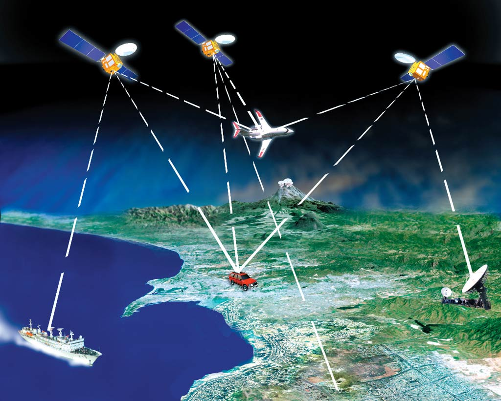

global navigation system to determine exact position.
based on 4 Satellites whisch work with rotation signals and show you exact position and time.
at least 3 satellites necessary
satellites rotating around the earth
24 satellites are uesd for the orbit and surround the earth 2 times during a day
Second point - history
first established 1958 from the US Ministry of Defense
1978 first satellite was shot in the sky
repaced the old Marine System NNSS (transit) and the Vela Satellites which were needed to search for nuclear weapons
in order to keep rivals away, the military encoded the GPS signals.
big advantege was the GPS signal just cudl be recived but not send.
since 2000 also civil usage which can be exact within 10 meters
with GPS is super exact position possible
constantly improvement in the usage of GPS
Third point - Usage

today usage in any kind of working field such as airspace, cars, emergency and fire workers, public transport, orientation outdoors, precision farming, sports,...
german SAPOS is realy important in our days for geosciences